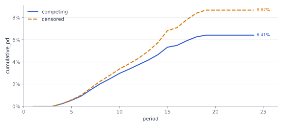

Lifetime PD and expected credit loss#
IFRS 9 requires a lender to hold a loss allowance for the credit losses that it expects on its loans. While the credit risk of a loan has not increased significantly since it was granted, the allowance covers the losses from defaults in the next 12 months; once it has, and once the loan is in default, it covers the losses over the remaining life of the loan. Both need the probability of a default in each period after the reporting date, a PD term structure, rather than the single 12-month PD of a scorecard.
The term structures come from the vintage curves and the transition matrices of Vintage and roll-rate analysis, or from the durations of the loans until they default, repay or are last observed, and the loss allowance is the last step of this user guide. convert_pd() converts a term structure between cumulative, marginal and conditional PDs, transition_pd() projects one from a transition matrix, conditional_matrix() shifts a transition matrix to the economy of a scenario, matrix_factor() and matrix_correlation() estimate its factor and correlation from observed movements, survival_table() estimates one from loans that are censored, repaid early or observed only from some age on, expected_credit_loss() gives the 12-month and the lifetime expected credit loss of each account, significant_increase() and assign_stages() allocate the accounts to the three stages, and stage_table() sums the loss allowance of each stage.
Definitions#
A PD term structure describes the risk of each period after a starting point, such as the origination of a loan or the reporting date. For period \(k\), the cumulative PD \(C_k\) is the probability of a default in periods 1 to \(k\), the marginal PD \(m_k\) the probability of a default in period \(k\), and the conditional PD \(h_k\), also called the hazard rate, the probability of a default in period \(k\) given that there was none before. With \(C_0 = 0\), each of them gives the others:
A loan leaves the risk of default when it defaults, when it is repaid, early or at its term, or when the data end. A loan last observed without a default or a repayment is censored: all that is known is that it had not defaulted by then. A repayment is a competing risk: once repaid, a loan can no longer default. With \(n_t\) loans at risk in period \(t\) of their life, \(d_t\) defaults and \(c_t\) repayments in it, the hazard rate of default is \(h_t = d_t / n_t\), and the probability of being still on book at the end of the period is \(S(t) = \prod_{s \le t} (1 - (d_s + c_s) / n_s)\). The cumulative PD is the cumulative incidence of default, the Aalen–Johansen estimate
and without competing exits it is the Kaplan–Meier estimate \(1 - \prod_{s \le t} (1 - h_s)\).
The expected credit loss (ECL) of an account adds up, over the periods \(t = 1, \ldots, H\) after the reporting date, the marginal PD of each period times the loss given default (LGD) and the exposure at default (EAD) in that period, discounted to the reporting date at the effective interest rate \(r\) per period:
The 12-month ECL adds up the periods of the next 12 months, and the lifetime ECL every period up to maturity. expected_credit_loss() uses these conventions:
Period 1 starts at the reporting date and ends one period later, so with monthly periods the 12-month ECL has
horizon=12.The marginal PDs are seen from the reporting date. They are not conditional on survival, and they add up to the cumulative PD.
A default in period \(t\) occurs at its end, so its loss is discounted over \(t\) periods. The rate is the effective interest rate per period, such as \((1 + r_\text{annual})^{1/12} - 1\) for monthly periods.
IFRS 9 allocates each exposure to one of three stages, which decide its horizon:
Stage |
Exposures |
Loss allowance |
|---|---|---|
1 |
Credit risk not increased significantly since initial recognition |
12-month ECL |
2 |
Credit risk increased significantly since initial recognition |
Lifetime ECL |
3 |
Credit-impaired |
Lifetime ECL |
IFRS 9 defines credit-impaired exposures by events that hurt their expected cash flows, such as a default or the significant financial difficulty of the borrower. In practice, lenders usually align them with their definition of default.
A worked example#
A loan defaults in its first year with probability 0.02, by the end of its second year with probability 0.05 and by the end of its third year with probability 0.08:
>>> from kivi.lifetime import convert_pd, expected_credit_loss
>>> cumulative = [0.02, 0.05, 0.08]
>>> convert_pd(cumulative, kind="cumulative", to="marginal")
array([0.02, 0.03, 0.03])
>>> convert_pd(cumulative, kind="cumulative", to="conditional").round(4)
array([0.02 , 0.0306, 0.0316])
The marginal PD of the second year is 0.05 − 0.02 = 0.03. Of the 98% of loans without a default in the first year, 0.03 / 0.98 = 3.06% default in the second, the conditional PD.
With an LGD of 50%, an exposure that amortizes from 1,000 to 700 and 400, and an effective interest rate of 5% a year, the expected credit losses of the loan are:
>>> marginal = [[0.02, 0.03, 0.03]]
>>> ead = [[1000.0, 700.0, 400.0]]
>>> expected_credit_loss(marginal, 0.5, ead, rate=0.05).round(2)
array([24.23])
>>> expected_credit_loss(marginal, 0.5, ead, rate=0.05, horizon=1).round(2)
array([9.52])
The first year contributes 0.02 × 0.5 × 1,000 / 1.05 = 9.52, which is the 12-month ECL. The second contributes 0.03 × 0.5 × 700 / 1.05² = 9.52 and the third 0.03 × 0.5 × 400 / 1.05³ = 5.18, so the lifetime ECL is 24.23. Each row of the PDs is one account, so a portfolio is computed in one call.

The worked example year by year. convert_pd gives the marginal and conditional PDs, and expected_credit_loss adds up the discounted losses: the first year with horizon=1, all three by default.#
Term structures from vintage curves#
A vintage table holds the cumulative bad rate of each cohort by month on book: a cumulative PD term structure from origination. The examples use the synthetic loan panel of make_loan_panel(), which Example data describes, and the 90+ bad definition of Vintage and roll-rate analysis. The conditional PDs of each cohort follow from vintage_table() and convert_pd():
>>> import numpy as np
>>> import pandas as pd
>>> from kivi.datasets import make_loan_panel
>>> from kivi.vintage import vintage_table
>>> panel = make_loan_panel(rng=0)
>>> ever_90 = vintage_table(
... panel["loan_id"], panel["cohort"], panel["month_on_book"], panel["status"] == "90+"
... )
>>> hazard = convert_pd(ever_90, kind="cumulative", to="conditional")
>>> hazard[[6, 12, 18, 24]].iloc[::3].round(4)
month_on_book 6 12 18 24
cohort
2024-01 0.0000 0.0091 0.0093 0.0
2024-04 0.0050 0.0051 0.0106 NaN
2024-07 0.0051 0.0053 0.0000 NaN
2024-10 0.0000 0.0000 NaN NaN
2025-01 0.0000 0.0050 NaN NaN
2025-04 0.0049 NaN NaN NaN
2025-07 0.0000 NaN NaN NaN
2025-10 NaN NaN NaN NaN
Each entry is the share of a cohort’s loans that went bad at that month on book among the loans that had not gone bad before. The months on book that a cohort has not reached stay missing. A cohort has about 200 loans, so a single bad loan moves its rate by half a percentage point, and many entries are 0.
Conditional PDs at the same month on book are comparable across cohorts, which makes them the quantity to pool. The mean of each column averages the cohorts that reached that month on book and skips the others, because mean ignores missing values. The early months rest on many cohorts and the late ones on few:
>>> pooled = hazard.mean()
>>> hazard[[6, 12, 18, 24]].count()
month_on_book
6 19
12 13
18 7
24 1
dtype: int64
>>> curve = convert_pd(pooled, kind="conditional", to="cumulative")
>>> pd.DataFrame({"pooled": curve, "2024-01": ever_90.loc["2024-01"]}).loc[[6, 12, 18, 24]].round(4)
pooled 2024-01
month_on_book
6 0.0101 0.0000
12 0.0417 0.0684
18 0.0717 0.0940
24 0.0734 0.0940

Cumulative 90+ bad rate of each cohort by month on book (thin) and the curve of the pooled conditional PDs (bold). The young cohorts stop after a few months on book, while the pooled curve runs to the last month on book of the panel.#
The pooled curve reaches the oldest month on book of the panel for every cohort. From month on book 12 on, it lies below the curve of the oldest cohort, 2024-01, which was riskier than the average one, and beyond month on book 18 it rests on seven cohorts or fewer.
From the reporting date#
expected_credit_loss() takes PDs seen from the reporting date, for a loan that has not defaulted by then. For a loan of a given age, convert the conditional PDs of the months on book after that age to marginal PDs. A loan at month on book 6 has these marginal PDs for the next 12 months:
>>> ahead = convert_pd(pooled.loc[7:18], kind="conditional", to="marginal")
>>> ahead.round(4).head(3)
month_on_book
7 0.0063
8 0.0054
9 0.0048
dtype: float64
>>> print(f"{ahead.sum():.4f}")
0.0623
Their sum, 6.23%, is the probability that a loan without a default by month on book 6 defaults by month on book 18, \((C_{18} - C_6) / (1 - C_6)\) on the pooled curve. A vintage table counts every loan of a cohort, also the loans repaid early, which can no longer go bad. These PDs therefore already allow for early repayment, and they go with the balance of a loan that is still on book, such as its contractual schedule.
Term structures from transition matrices#
A transition matrix gives the probabilities of moving from each delinquency bucket or rating grade to each other one in a period, as in Vintage and roll-rate analysis. If the movements follow a time-homogeneous Markov chain, the powers of the matrix give a term structure for each starting state. transition_pd() makes the default state absorbing, so that loans that cure from default still count as defaulted, and returns the cumulative PD of each state at each horizon:
>>> from kivi.lifetime import transition_pd
>>> from kivi.vintage import transition_matrix
>>> later = panel[["loan_id", "month_on_book", "status"]].assign(
... month_on_book=panel["month_on_book"] - 1
... )
>>> pairs = panel.merge(later, on=["loan_id", "month_on_book"], suffixes=("", "_next"))
>>> monthly = transition_matrix(pairs["status"], pairs["status_next"], normalize=True)
>>> cumulative = transition_pd(monthly, horizons=36)
>>> cumulative[[1, 3, 6, 12, 24, 36]].round(4)
horizon 1 3 6 12 24 36
state
current 0.0000 0.0000 0.0113 0.0393 0.0932 0.1440
1-29 0.0000 0.1159 0.2177 0.2420 0.2845 0.3246
30-59 0.0000 0.5381 0.5922 0.6041 0.6263 0.6472
60-89 0.7118 0.8635 0.8694 0.8731 0.8802 0.8869
90+ 1.0000 1.0000 1.0000 1.0000 1.0000 1.0000
The default state is the last one, here 90+, unless default_state names another. A loan falls at most one bucket further behind per month, so a current loan needs four months to reach 90+ and its PD is 0 for three months. The PD of every state rises with the horizon, and the worse the bucket, the higher it starts: six in ten loans at 30 to 59 days past due reach 90+ within a year.
Because \(P^{a+b} = P^a P^b\), the PD at \(a + b\) months is the PD at \(b\) months of the states reached after \(a\) months. A monthly matrix therefore gives the PD over any number of months, but only as far as the movements are a Markov chain with the same probabilities in every month. The current state against the pooled vintage curve shows how far that holds:
>>> pd.DataFrame({"matrix": cumulative.loc["current"], "vintage": curve}).loc[[6, 12, 18, 24]].round(4)
matrix vintage
6 0.0113 0.0101
12 0.0393 0.0417
18 0.0666 0.0717
24 0.0932 0.0734

Cumulative PD of each state by horizon from the monthly transition matrix. The dashed line is the pooled vintage curve, which follows the curve of the current state in the first year and levels off in the second.#
The two agree in the first year and part in the second. The matrix mixes loans of every age, while the chance of missing an instalment depends on the month on book, and the vintage curve beyond month on book 18 rests on a few cohorts.
convert_pd() gives the marginal PDs of each state, which add up to the PD at the last horizon:
>>> marginal = convert_pd(cumulative, kind="cumulative", to="marginal")
>>> marginal.sum(axis=1).round(4)
state
current 0.1440
1-29 0.3246
30-59 0.6472
60-89 0.8869
90+ 1.0000
dtype: float64
The economy in a transition matrix#
The monthly matrix averages the movements over the months of the panel. In a bad month more loans miss an instalment and fewer cure, and in a good one the reverse. conditional_matrix() shifts the whole matrix with the one-factor model of Belkin, Suchower and Forest: the movements from each state follow a standard normal credit index, cut at thresholds that reproduce the row of the matrix, and the index of every loan shares a systematic factor \(z\) with the asset correlation \(\rho\), as in Regulatory capital. The states must be ordered from the best to the worst, as the delinquency buckets are here. With a correlation of 0.05 and a factor 1.5 standard deviations below its median:
>>> from kivi.lifetime import conditional_matrix
>>> downturn = conditional_matrix(monthly, correlation=0.05, factor=-1.5)
>>> downturn.round(4)
after current 1-29 30-59 60-89 90+
before
current 0.9562 0.0438 0.0000 0.0000 0.0000
1-29 0.3736 0.2093 0.4170 0.0000 0.0000
30-59 0.1575 0.0000 0.1582 0.6843 0.0000
60-89 0.0531 0.0000 0.0000 0.1264 0.8205
90+ 0.0000 0.0000 0.0000 0.0000 1.0000
Nearly twice as many current loans miss an instalment as in monthly, 4.38% against 2.27%, delinquent loans cure less often and roll more often, and the movements that the matrix rules out, such as skipping a bucket, stay impossible. The default column is the conditional PD of conditional_pd(): 0.8205 for a loan at 60 to 89 days past due, against 0.7118 in monthly.
A factor of 0 is the economy of the median month, not of the average one. The PDs rise faster in bad months than they fall in good ones, so the median month has fewer misses than monthly, and only the average over the standard normal factor gives monthly back. With Gauss–Hermite quadrature over the factor:
>>> nodes, weights = np.polynomial.hermite_e.hermegauss(40)
>>> average = sum(
... w * conditional_matrix(monthly, correlation=0.05, factor=z) for z, w in zip(nodes, weights)
... ) / weights.sum()
>>> median = conditional_matrix(monthly, correlation=0.05, factor=0.0)
>>> pd.DataFrame(
... {
... "monthly": monthly.loc["current"],
... "median": median.loc["current"],
... "average": average.loc["current"],
... }
... ).round(4)
monthly median average
after
current 0.9773 0.9799 0.9773
1-29 0.0227 0.0201 0.0227
30-59 0.0000 0.0000 0.0000
60-89 0.0000 0.0000 0.0000
90+ 0.0000 0.0000 0.0000
The factor and the correlation belong to the period of the matrix, here a month. A path with a factor for each month multiplies the shifted matrices, and the default column of the product is the cumulative PD, as transition_pd() gives it for the powers of one matrix. Kept for a year, the downturn more than triples the 12-month PD of a current loan:
>>> pd.DataFrame(
... {
... "monthly": transition_pd(monthly, horizons=12)[12],
... "downturn": transition_pd(downturn, horizons=12)[12],
... }
... ).round(4)
monthly downturn
state
current 0.0393 0.1345
1-29 0.2420 0.4690
30-59 0.6041 0.7902
60-89 0.8731 0.9464
90+ 1.0000 1.0000
The average over the factor gives monthly back for one month, and for twelve months when each month has a factor of its own. A factor kept for the whole year gives other PDs than the twelfth power of monthly. Averaged over the standard normal factor:
>>> kept = sum(
... w * transition_pd(conditional_matrix(monthly, correlation=0.05, factor=z), horizons=12)
... for z, w in zip(nodes, weights)
... ) / weights.sum()
>>> pd.DataFrame({"monthly": transition_pd(monthly, horizons=12)[12], "kept": kept[12]}).round(4)
monthly kept
state
current 0.0393 0.0507
1-29 0.2420 0.2584
30-59 0.6041 0.6061
60-89 0.8731 0.8701
90+ 1.0000 1.0000
For a current loan, a bad year compounds the misses month after month, and the average rises from 3.93% to 5.07%. For a loan at 60 to 89 days past due, which defaults directly, it falls slightly, and with two states it always falls. The same factor in every month is a strong assumption about the economy.
Factors from observed matrices#
From the history of a portfolio, matrix_factor() estimates the factor of each month: the maximum-likelihood factor under which the shifted matrix explains the movements of the month best. matrix_correlation() estimates the correlation as Belkin, Suchower and Forest do, so that the factors of the months have a sample variance of 1, as the standard normal factor of the model has. The panel above has no economic cycle: its factors would follow the ageing of its young book, and their correlation would say nothing about the economy. make_loan_panel() simulates a cycle with correlation and factors. Here are five years of months with a correlation of 0.05 and known factors, and each row of moves is the move of a loan into a month, driven by the factor of that month:
>>> from kivi.lifetime import matrix_correlation, matrix_factor
>>> true_factors = np.random.default_rng(1).standard_normal(60)
>>> cyclical = make_loan_panel(n_months=60, correlation=0.05, factors=true_factors, rng=0)
>>> earlier = cyclical[["loan_id", "month_on_book", "status"]].assign(
... month_on_book=cyclical["month_on_book"] + 1
... )
>>> all_moves = cyclical.merge(earlier, on=["loan_id", "month_on_book"], suffixes=("", "_before"))
>>> moves = all_moves[all_moves["month"] >= "2024-05"]
The first months hold few loans, too young to fall behind: in March 2024 all 102 loans stayed current, which no finite factor explains best (see Errors and warnings), and in April 6 of 186 fell behind, which gives a finite factor, but one that rests on a handful of young loans. The example therefore starts in May. The long-run matrix pools the months, and each month gets its own count matrix:
>>> long_run = transition_matrix(moves["status_before"], moves["status"], normalize=True)
>>> counts = {
... month: transition_matrix(group["status_before"], group["status"], states=long_run.index)
... for month, group in moves.groupby("month")
... }
>>> correlation = matrix_correlation(counts, long_run)
>>> print(f"{correlation:.4f}")
0.0521
>>> factors = pd.Series(
... {month: matrix_factor(c, long_run, correlation=correlation) for month, c in counts.items()}
... )
>>> factors.groupby(factors.index.year).mean().round(2)
2024 -0.36
2025 -0.24
2026 0.20
2027 -0.17
2028 0.08
2029 0.23
dtype: float64
The mean of the factors is not forced to 0. The factor absorbs every change that moves all rows together, also a change in the mix of the portfolio, such as its age: in 2024 most loans are near the peak of their seasoning, around their sixth month on book, and miss more instalments than the long-run matrix of all ages gives, so the factors of 2024 come out lower than the economy alone would make them. The long-run matrix and the monthly counts should therefore describe comparable loans, segmented by age or by product if need be. With a real history, a macroeconomic model of the user’s own links the factors to forecasts of the economy. Another route estimates the correlation from a series of default rates with vasicek_fit() and the factors with systematic_factor().
Simulation check
The panel was simulated with the factors true_factors, the first for February 2024:
>>> truth = pd.Series(true_factors, index=pd.period_range("2024-02", periods=60, freq="M"))
>>> truth = truth[factors.index]
>>> print(f"{np.corrcoef(factors, truth)[0, 1]:.2f}, {truth.var():.2f}")
0.89, 0.78
>>> pd.DataFrame({"estimated": factors, "true": truth}).groupby(factors.index.year).mean().round(2)
estimated true
2024 -0.36 0.10
2025 -0.24 -0.04
2026 0.20 -0.04
2027 -0.17 -0.34
2028 0.08 0.01
2029 0.23 -0.31
The estimated factors follow the true ones closely, with a correlation of 0.89, while their yearly means drift with the age of the book, from below the true ones in 2024 to above them later. Because their variance is set to 1, the estimated correlation is about the true 0.05 times the sample variance of the true factors, 0.78 here; the binomial noise of a few thousand loans a month and the ageing of the book add to the variance of the estimates and raise it.
Term structures from survival tables#
A vintage table needs cohorts that have been observed since origination, and it pools them only through their conditional PDs. survival_table() starts instead from one row per loan: duration, the month on book in which it defaulted, was repaid or was last observed, event, whether it defaulted, and competing, whether it was repaid. Eight loans over three months show the computation:
>>> from kivi.lifetime import survival_table
>>> duration = [1, 1, 2, 2, 2, 3, 3, 3]
>>> event = [1, 0, 1, 0, 0, 1, 0, 0]
>>> repaid = [0, 1, 0, 1, 0, 0, 0, 0]
>>> survival_table(duration, event, competing=repaid).round(4)
at_risk event competing censored hazard survival cumulative_pd
period
1 8 1 1 0 0.1250 0.7500 0.1250
2 6 1 1 1 0.1667 0.5000 0.2500
3 3 1 0 2 0.3333 0.3333 0.4167
In the second month, six loans are at risk and one defaults, so the hazard is 1/6. Three quarters of the loans got through the first month with neither a default nor a repayment, so the cumulative PD rises by 0.75 × 1/6 to 0.25. The loan censored in month 2 counts in the risk set of that month: its censoring comes after the defaults and repayments of the month.
Column |
Meaning |
|---|---|
|
Loans at risk in the period: those with |
|
Loans that defaulted in the period. |
|
Loans that left for another reason in the period, such as a repayment. Only with |
|
Loans last observed in the period without a default or an exit. |
|
|
|
Probability of neither a default nor an exit by the end of the period. |
|
Probability of a default by the end of the period: the cumulative incidence with |
cumulative_pd is a cumulative term structure, which convert_pd() turns into marginal or conditional PDs, as for a vintage curve.
Durations from a loan panel#
The loans of make_loan_panel() repay early when prepayment gives the monthly probability that a current loan repays its whole balance, as Example data describes. A loan defaults in the first month on book at which it is 90+, it is repaid in its last row if its balance is 0 there, early or at its term, and otherwise it is censored at the last month of the panel:
>>> repaying = make_loan_panel(prepayment=0.02, rng=0)
>>> bad = repaying["status"] == "90+"
>>> last = repaying.groupby("loan_id").tail(1).set_index("loan_id")
>>> default_month = repaying[bad].groupby("loan_id")["month_on_book"].min()
>>> loans = pd.DataFrame(
... {
... "cohort": last["cohort"],
... "duration": default_month.reindex(last.index).fillna(last["month_on_book"]).astype(int),
... "event": last.index.isin(default_month.index),
... "competing": last["balance"].eq(0),
... }
... )
>>> loans.head()
cohort duration event competing
loan_id
1 2024-01 24 False True
2 2024-01 16 False True
3 2024-01 24 False False
4 2024-01 11 True False
5 2024-01 2 False True
>>> int(loans["event"].sum()), int(loans["competing"].sum())
(182, 1416)
Of the 1,416 repaid loans, the 962 with a balance of 0 before their term repaid early. Loan 4 reached 90+ at month on book 11 and stays in the panel at 90+, but it leaves the risk set there. One call pools all the cohorts:
>>> table = survival_table(loans["duration"], loans["event"], competing=loans["competing"])
>>> table.loc[[1, 4, 6, 12, 18, 24]].round(4)
at_risk event competing censored hazard survival cumulative_pd
period
1 5000 0 95 225 0.0000 0.9810 0.0000
4 4100 10 88 207 0.0024 0.9189 0.0023
6 3530 15 57 196 0.0042 0.8812 0.0093
12 2083 11 420 127 0.0053 0.6176 0.0376
18 778 5 13 113 0.0064 0.5214 0.0625
24 120 0 60 60 0.0000 0.2344 0.0641
Every cohort counts from its first month on book, and the risk set shrinks as loans default, repay and reach the end of the panel: 225 loans of the youngest cohort are censored at month on book 1. The repayments at month on book 12 are mostly the 12-month loans that reach their term. The late months rest on the oldest cohorts only.
Early repayment as a competing risk#
Without competing, every loan that did not default is censored, and cumulative_pd is 1 − Kaplan–Meier:
>>> censored = survival_table(loans["duration"], loans["event"])
>>> pd.DataFrame(
... {"censored": censored["cumulative_pd"], "competing": table["cumulative_pd"]}
... ).loc[[6, 12, 18, 24]].round(4)
censored competing
period
6 0.0101 0.0093
12 0.0434 0.0376
18 0.0838 0.0625
24 0.0867 0.0641

Cumulative PD of the pooled loans by month on book. Counted as censored, the repaid loans raise the curve, which ends a third higher than the cumulative incidence.#
The censored estimate is a third higher after two years. Censoring assumes that a loan would have gone on with the risk of the loans still on book, but a repaid loan can no longer default: 1 − Kaplan–Meier is the PD of a loan that is never repaid. The cumulative incidence keeps the repaid loans among all the loans without letting them default, so it estimates the share of the loans that default. For a cohort observed from origination until the end of the panel, it is exactly the cumulative bad rate of vintage_table(), while 1 − Kaplan–Meier is higher:
>>> oldest = loans[loans["cohort"] == "2024-01"]
>>> vintage = vintage_table(
... repaying["loan_id"], repaying["cohort"], repaying["month_on_book"], bad
... )
>>> pd.DataFrame(
... {
... "vintage": vintage.loc["2024-01"],
... "competing": survival_table(
... oldest["duration"], oldest["event"], competing=oldest["competing"]
... )["cumulative_pd"],
... "censored": survival_table(oldest["duration"], oldest["event"])["cumulative_pd"],
... }
... ).loc[[6, 12, 18, 24]].round(4)
vintage competing censored
6 0.0000 0.0000 0.0000
12 0.0641 0.0641 0.0728
18 0.0897 0.0897 0.1116
24 0.0897 0.0897 0.1116
expected_credit_loss() takes the probability of a default in each period seen from the reporting date, which must allow for the loans that repay before. For a loan still on book at month on book \(a\), the marginal PD of a later month \(t\) is \((C_t - C_{t-1}) / S(a)\), the defaults of month \(t\) among the loans on book at \(a\). For a loan at month on book 6, the next 12 months give:
>>> ahead = table["cumulative_pd"].diff().loc[7:18] / table.loc[6, "survival"]
>>> print(f"{ahead.sum():.4f}")
0.0604
>>> print(f"{convert_pd(censored['hazard'].loc[7:18], kind='conditional', to='marginal').sum():.4f}")
0.0745
These PDs go with the contractual balance of the loan, which it owes as long as it is on book. The hazards of 1 − Kaplan–Meier give 7.45% instead of 6.04%: they leave out that the loan may repay first, and they overstate the lifetime PD and with it the lifetime ECL.
Left truncation#
Data often start after the loans were originated, for example when a new system went live. The loans that defaulted or were repaid before are missing, and the others are observed only from their month on book at the start. entry gives the number of months on book before a loan comes under observation, and the loan is at risk from month on book entry + 1. If the panel starts in January 2025, a loan first seen at month on book 12 has an entry of 11.
A loan that reached 90+ before 2025 had defaulted before it came under observation, and is left out. A loan that reaches 90+ in January 2025 defaulted in the window, in its first month at risk, and stays: leaving it out would drop defaults because of their outcome and bias the curve down. Both have a first row at 90+, because 90+ is the last bucket, so the example compares the month on book of the default with that of the first row; with real data, the days past due of the first row, or the status at the end of the month before, tell them apart:
>>> window = repaying[repaying["month"] >= "2025-01"]
>>> first = window.groupby("loan_id").head(1).set_index("loan_id")
>>> seen = loans.loc[first.index]
>>> before = seen["event"] & (seen["duration"] < first["month_on_book"])
>>> observed = seen[~before]
>>> int(before.sum()), int((first.loc[observed.index, "status"] == "90+").sum())
(37, 9)
>>> entry = first.loc[observed.index, "month_on_book"] - 1
>>> truncated = survival_table(
... observed["duration"], observed["event"], competing=observed["competing"], entry=entry
... )
>>> naive = survival_table(observed["duration"], observed["event"], competing=observed["competing"])
>>> pd.DataFrame(
... {
... "all_rows": table["cumulative_pd"],
... "entry": truncated["cumulative_pd"],
... "without_entry": naive["cumulative_pd"],
... }
... ).loc[[6, 12, 18, 24]].round(4)
all_rows entry without_entry
period
6 0.0093 0.0093 0.0066
12 0.0376 0.0350 0.0296
18 0.0625 0.0601 0.0564
24 0.0641 0.0618 0.0581
Without entry, the loans of 2024 count as at risk from their first month on book, although they were not observed then and are in the data only because they had neither defaulted nor been repaid by 2025: the early risk sets are too large and the PD too low. With entry, each month on book uses only the loans observed at that age, and the curve stays within 0.3 percentage points of that of the whole panel; it differs from it because its first months rest on the cohorts originated during the window. Left truncation loses information, but with entry it no longer biases the estimate.
Discrete-time hazard models#
The hazards of survival_table() are one estimate per month on book for all the loans. A discrete-time hazard model smooths them and can add the characteristics of each loan: a logistic regression on a person-period table, with one row for every month that a loan is at risk and a target of 1 in the month of its default. Each loan of the panel gives duration rows:
>>> from kivi.selection import logistic_regression
>>> expanded = loans.loc[loans.index.repeat(loans["duration"])]
>>> month_on_book = expanded.groupby(level="loan_id").cumcount() + 1
>>> defaulted = (expanded["event"] & (month_on_book == expanded["duration"])).astype(int)
>>> len(expanded), int(defaulted.sum())
(50563, 182)
logistic_regression() fits the log odds of the hazard. Separate coefficients for each month would reproduce the hazard column, but the months without a default would separate the classes. The logarithm of the month on book and the month on book itself give a curve that rises with seasoning and then falls:
>>> X = pd.DataFrame({"log_month_on_book": np.log(month_on_book), "month_on_book": month_on_book})
>>> fit = logistic_regression(X, defaulted)
>>> fit.round(4)
coef se z p_value
variable
intercept -10.8619 0.7879 -13.7852 0.0
log_month_on_book 4.3320 0.6416 6.7513 0.0
month_on_book -0.4033 0.0691 -5.8380 0.0
>>> months = table.index.to_numpy()
>>> log_odds = fit.loc["intercept", "coef"] + (
... fit.loc["log_month_on_book", "coef"] * np.log(months)
... + fit.loc["month_on_book", "coef"] * months
... )
>>> smoothed = pd.Series(1 / (1 + np.exp(-log_odds)), index=table.index)
>>> pd.DataFrame({"hazard": table["hazard"], "model": smoothed}).loc[[4, 6, 12, 18, 24]].round(4)
hazard model
period
4 0.0024 0.0015
6 0.0042 0.0040
12 0.0053 0.0071
18 0.0064 0.0037
24 0.0000 0.0011
The model’s hazard peaks at about 11 months on book and runs smoothly through the late months, where the table rests on a few loans. A loan’s characteristics, such as a behavioural score, enter the same model as further columns and give each loan its own hazards. The hazards are conditional on the loan being still on book, so the cumulative PD weights them with the probability of getting there, as the cumulative incidence does. With survival from the table, which a second model for the repayments could replace:
>>> on_book = table["survival"].shift(fill_value=1.0)
>>> pd.DataFrame(
... {"table": table["cumulative_pd"], "model": (on_book * smoothed).cumsum()}
... ).loc[[6, 12, 18, 24]].round(4)
table model
period
6 0.0093 0.0084
12 0.0376 0.0412
18 0.0625 0.0595
24 0.0641 0.0656
Expected credit loss#
The reporting date here is the end of January 2026, the last month of the panel, and the book holds the loans that still have a balance:
>>> book = panel[(panel["month"] == "2026-01") & (panel["balance"] > 0)].set_index("loan_id")
>>> book["status"].value_counts(sort=False)
status
current 4076
1-29 82
30-59 21
60-89 32
90+ 205
Name: count, dtype: int64
Each loan gets the marginal PDs of its delinquency bucket, with one row per loan and one column per month after the reporting date:
>>> account_pd = marginal.loc[book["status"]].set_axis(book.index)
>>> account_pd.iloc[:3, :6].round(4)
horizon 1 2 3 4 5 6
loan_id
2 0.0 0.0 0.0 0.0026 0.0041 0.0046
3 0.0 0.0 0.0 0.0026 0.0041 0.0046
4 1.0 0.0 0.0 0.0000 0.0000 0.0000
The exposure at default of each month is the balance that the loan is expected to have outstanding in that month: the balance at the reporting date, repaid by the remaining instalments of an annuity at the loans’ interest rate of 1% a month. paid counts the instalments paid before each month. Loans past their term, which keep rolling in this data, owe their balance at once. After the last instalment the exposure is 0, so the months after a loan’s term add nothing:
>>> remaining = np.maximum(book["term"] - book["month_on_book"], 1).to_numpy()[:, None]
>>> paid = np.minimum(np.arange(36), remaining)
>>> growth = 1.01
>>> ead = book[["balance"]].to_numpy() * (growth**remaining - growth**paid) / (growth**remaining - 1)
The losses are discounted at the loans’ effective interest rate of 1% a month. A loan already at 90+ has defaulted at the reporting date, so its loss is measured at that date without discounting, and its rate is 0. With an LGD of 45%, expected_credit_loss() gives the 12-month and the lifetime ECL of each loan:
>>> defaulted = book["status"] == "90+"
>>> rate = np.where(defaulted, 0.0, 0.01)
>>> twelve_month = expected_credit_loss(account_pd, 0.45, ead, rate=rate, horizon=12)
>>> lifetime = expected_credit_loss(account_pd, 0.45, ead, rate=rate)
>>> losses = pd.DataFrame(
... {
... "status": book["status"],
... "remaining": remaining[:, 0],
... "balance": book["balance"],
... "twelve_month": twelve_month,
... "lifetime": lifetime,
... }
... )
>>> losses[losses["remaining"] > 24].groupby("status", observed=True).head(1).round(2)
status remaining balance twelve_month lifetime
loan_id
2697 current 25 2999.08 36.00 56.27
2723 30-59 25 4069.08 1017.32 1028.66
2790 90+ 25 10371.94 4667.37 4667.37
2809 1-29 25 3331.36 307.70 325.47
3383 60-89 28 6964.51 2680.77 2688.99
These are the first loans of each bucket with more than two years to run. The lifetime ECL of the current loan is half as large again as its 12-month ECL: its PD is 0 for three months and its risk builds up over the following ones. The delinquent loans default mostly within the year, so their two ECLs are close. For a loan already at 90+, the PD is 1 in the first month and the rate is 0, so the ECL is the LGD times the balance: 0.45 × 10,371.94 = 4,667.37.
Economic scenarios#
IFRS 9 measures the ECL as an unbiased, probability-weighted amount over a range of possible outcomes that reflects forecasts of economic conditions (paragraphs 5.5.17 and B5.5.42). The PDs above come from monthly, the average of the months of the panel. conditional_matrix() shifts it to the economy of a scenario, with the correlation estimated from the movements of the cyclical panel above. The three scenarios below, with their factors and probabilities, are assumptions of the example, where a forecast would set them. Each scenario keeps its factor for the first 12 months and then returns to monthly, the long-run matrix, rather than to a factor of 0, the median economy. The 90+ row of monthly already stays in default, so the products keep the loans that reach 90+ there:
>>> scenarios = pd.DataFrame(
... {"factor": [1.0, 0.0, -1.5], "weight": [0.25, 0.5, 0.25]},
... index=pd.Index(["upside", "base", "downturn"], name="scenario"),
... )
>>> results = {}
>>> for scenario, factor in scenarios["factor"].items():
... shifted = conditional_matrix(monthly, correlation=correlation, factor=factor)
... path, paths = np.eye(len(monthly)), {}
... for horizon in range(1, 37):
... path = path @ (shifted if horizon <= 12 else monthly).to_numpy()
... paths[horizon] = path[:, -1]
... path_pd = pd.DataFrame(paths, index=monthly.index)
... marginal_pd = convert_pd(path_pd, kind="cumulative", to="marginal")
... scenario_pd = marginal_pd.loc[book["status"]].set_axis(book.index)
... results[scenario] = {
... "current_pd": path_pd.loc["current", 12],
... "twelve_month": expected_credit_loss(scenario_pd, 0.45, ead, rate=rate, horizon=12).sum(),
... "lifetime": expected_credit_loss(scenario_pd, 0.45, ead, rate=rate).sum(),
... }
>>> by_scenario = pd.DataFrame(results).T.rename_axis("scenario")
>>> by_scenario.loc["weighted"] = by_scenario.mul(scenarios["weight"], axis=0).sum()
>>> by_scenario.round({"current_pd": 4, "twelve_month": 0, "lifetime": 0})
current_pd twelve_month lifetime
scenario
upside 0.0110 804584.0 889048.0
base 0.0348 966051.0 1072313.0
downturn 0.1374 1597923.0 1766638.0
weighted 0.0545 1083652.0 1200078.0
current_pd is the 12-month PD of a current loan: 3.48% in the base scenario, the median economy kept for a year, below the 3.93% of monthly, and 13.74% in the downturn. The shifted matrix moves every bucket, so the scenarios change the cures and the rolls of the delinquent loans as well as the misses of the current ones. The weighted ECL is 12% above that of the base scenario, over 12 months and over the lifetime: the PDs rise faster as the economy worsens than they fall as it improves, the downturn lies further from the base than the upside, and a factor kept for a year compounds the misses of current loans, as the average over the factor above shows. The ECL of the most likely scenario alone would understate the weighted amount.
Stage allocation#
A significant increase in credit risk is judged against the risk expected at initial recognition. significant_increase() compares the PD at the reporting date with the PD expected at origination, as a ratio, a difference or both. With relative=2.0 and absolute=0.01, a PD must have more than doubled and risen by more than one percentage point:
>>> from kivi.lifetime import assign_stages, significant_increase, stage_table
>>> significant_increase(
... [0.004, 0.012, 0.03, 0.09], [0.001, 0.010, 0.01, 0.05], relative=2.0, absolute=0.01
... )
array([False, False, True, False])
The first PD quadrupled but rose by only 0.3 percentage points, the second barely rose, and the last rose by 4 points without doubling. IFRS 9 does not set these thresholds. They are the lender’s policy, like the definition of default, so both arguments are required, and either can be None to leave its test out. For a rule under which either test suffices, combine two calls, each with one threshold, with |; qualitative criteria, such as a watch list, combine with the flags in the same way.
Compare PDs of the same horizon. In the panel, a loan’s delinquency bucket is the only risk driver, and every loan was current at origination, so the 12-month PD of each bucket against that of a current loan gives the test:
>>> probability = cumulative.loc[book["status"], 12].to_numpy()
>>> origination_probability = np.full(len(book), cumulative.loc["current", 12])
>>> increase = significant_increase(
... probability, origination_probability, relative=2.0, absolute=0.01
... )
assign_stages() adds the backstops: an exposure more than 30 days past due is at least in stage 2, and one 90 days past due or more, or flagged as defaulted, is in stage 3. The defaults follow the rebuttable presumptions of IFRS 9: credit risk has increased significantly when contractual payments are more than 30 days past due (paragraph 5.5.11), and default occurs no later than when a financial asset is 90 days past due (paragraph B5.5.37). Pass stage_2_days and stage_3_days for other thresholds. The panel records buckets rather than days, so the example takes the middle of each bucket, and it flags the 90+ loans as defaulted:
>>> days_past_due = np.array([0, 15, 45, 75, 105])[book["status"].cat.codes]
>>> stage = assign_stages(increase, days_past_due, defaulted)
>>> pd.crosstab(book["status"], stage)
stage 1 2 3
status
current 4076 0 0
1-29 0 82 0
30-59 0 21 0
60-89 0 32 0
90+ 0 0 205
The PD test flags every delinquent bucket, so here the stages follow the buckets. A behavioural score or a rating would also separate the current loans from each other.
The wording of the two presumptions sets the boundaries. Like the PD thresholds, the 30 days must be exceeded, so an exposure exactly 30 days past due stays in stage 1, while an exposure exactly 90 days past due is already in stage 3:
>>> assign_stages([False] * 5, days_past_due=[0, 30, 31, 89, 90])
array([1, 1, 2, 2, 3])

The days-past-due backstops of assign_stages. More than 30 days past due is at least stage 2, and 90 days or more is stage 3.#
Loss allowance by stage#
The loss allowance of a loan in stage 1 is its 12-month ECL, and that of a loan in stage 2 or 3 its lifetime ECL. stage_table() sums the exposures and the allowances of each stage:
>>> allowance = np.where(stage == 1, twelve_month, lifetime)
>>> table = stage_table(stage, book["balance"], allowance)
>>> table.round(4)
total exposure exposure_share expected_credit_loss coverage
stage
1 4076 22660955.57 0.9126 219165.5680 0.0097
2 135 739820.77 0.0298 129643.3610 0.1752
3 205 1431123.43 0.0576 644005.5435 0.4500
>>> print(f"{table['expected_credit_loss'].sum() / table['exposure'].sum():.4f}")
0.0400
Reading the result#
Column |
Meaning |
|---|---|
|
Number of exposures in the stage, or their total weight with |
|
Sum of the exposures, such as the gross carrying amounts. |
|
The stage’s share of the exposure of all stages. |
|
Sum of the loss allowances. |
|
|
The coverage ratio rises from stage to stage, here from 1% in stage 1 to 18% in stage 2 and 45% in stage 3. In stage 3 the default has happened and the loss is not discounted, so the coverage is the LGD. In stage 1 it is below the LGD times the 12-month PD of a current loan, 0.45 × 0.0393 = 1.8%, because the balances amortize and many loans have less than a year to run. The coverage of the portfolio, 4.0% here, is the sum of the loss allowances divided by the sum of the exposures. The share of the exposure in stage 2 shows how much of the book carries lifetime losses; recompute the table with other thresholds to see how much the allowance depends on them.
Missing values#
convert_pd() treats a missing value as a period that is not observed, and never fills it. The marginal and conditional PDs of a period need the cumulative PDs at its end and at the end of the period before, and a cumulative PD needs every period before it. A curve that starts with missing values, as in a panel that starts after origination, gives marginal and conditional PDs from its second observed period on, but no cumulative PDs. Fill the periods that are not observed first, for example by pooling the cohorts as above or by extending the curve beyond its last month, before passing the PDs on.
expected_credit_loss() converts each account on its own, so as Conventions describes, an account with a missing PD, LGD or EAD in a period that is added up, or with a missing rate, gets a missing ECL; the periods after horizon are not used. transition_pd() needs a complete row for every state other than the default state. The staging functions reject missing values, because a flag or a stage cannot be missing: decide how to stage an exposure without a PD or without its days past due before passing it in.
survival_table() rejects missing values too, because a loan without a duration or an outcome cannot be counted. Its own result is NaN where no loan is at risk: the hazard of such a period, and survival and cumulative_pd from that period on, because the share of the loans that get through it is not known. This happens with entry when no loan is observed at some age, for example in the first months on book of a panel that holds only old loans. The hazards of the later periods are still known, and convert_pd() turns them into PDs conditional on reaching those periods.
Sample weights#
stage_table() and survival_table() take weights, such as the inverse of a sampling rate. The counts, exposures and losses become sums of weights, so integer weights give the same table as repeated rows, and loans with weight 0 are left out. The other functions work on single accounts or states and take no weights; to weight the loans of a vintage table by amount, pass weights to vintage_table().
Limits#
A transition matrix gives a term structure only as far as the movements are a time-homogeneous Markov chain: the same probabilities in every period, whatever the age of a loan or the time it has spent in its state.
IFRS 9 asks for an unbiased, probability-weighted amount that reflects forecasts of economic conditions. These functions compute the ECL of one set of PDs, LGDs and EADs: compute it for each economic scenario and weight the results with the probabilities of the scenarios, as in the example above. The shift of the one-factor model moves all PDs with one factor; a model of the PDs on macroeconomic variables, or LGDs and EADs that also depend on the scenario, need their own estimates.
conditional_matrix()moves every state with one factor and one correlation, while correlations estimated for each rating grade can differ widely. Its factor and correlation belong to the period of the matrix, and a factor kept over several periods gives average PDs that differ from those of the power of the long-run matrix, higher for some states and lower for others. The factors ofmatrix_factor()absorb every change that moves the rows together, also a change in the mix of the portfolio, andmatrix_correlation()rests on few periods in most histories.The states of
conditional_matrix()are ordered by credit quality. Exits that have no place in that order, such as early repayment or write-off, must be left out of the matrix and its rows divided by their sums, which gives the movements of the loans that do not exit and higher PDs; treat early repayment as a competing risk withsurvival_table()instead.Early repayment enters through the EAD schedule, through the vintage curves, which count repaid loans as not bad, and through the cumulative incidence of
survival_table().survival_table()assumes that censoring and late entry tell nothing about the risk of a loan, as when the data simply end. It estimates one curve for the loans it is given, without confidence intervals; split the loans into segments, or fit a discrete-time hazard model, to let the curve depend on their characteristics.For revolving facilities, such as credit cards, IFRS 9 measures the expected credit losses over the period in which the lender is exposed to credit risk, which can be longer than the contractual period (paragraphs B5.5.39 and B5.5.40). Choose the periods and the EAD schedule, including drawings of undrawn limits, for that period.
significant_increase()does not apply the exemption for exposures with low credit risk at the reporting date (paragraph 5.5.10); combine its flags with a low-risk criterion of your own.assign_stages()looks at one reporting date. Probation periods, during which an exposure that no longer meets a criterion stays in its stage, need the history of each exposure and are not applied, and neither are the rules for assets that are credit-impaired when they are purchased or originated.
Errors and warnings#
Published transition matrices are rounded, so their rows rarely add up to 1. transition_pd() allows a rounding error of 1e-9 only, and asks to divide each row by its sum:
>>> states = ["A", "B", "D"]
>>> rounded = pd.DataFrame(
... [[0.9, 0.08, 0.019], [0.1, 0.7, 0.2], [0.0, 0.0, 1.0]], index=states, columns=states
... )
>>> transition_pd(rounded, horizons=12)
Traceback (most recent call last):
...
ValueError: the rows of matrix must add up to 1, got 0.999 for state 'A'; divide each row by its sum
>>> transition_pd(rounded.div(rounded.sum(axis=1), axis=0), horizons=[1, 12])
horizon 1 12
state
A 0.019019 0.478693
B 0.200000 0.773781
D 1.000000 1.000000
matrix_factor() has no finite estimate when every movement of a period is to the best state, or every one to the worst state, that its state can reach. In March 2024 all 102 loans of the cyclical panel stayed current, which a higher factor always explains better:
>>> march = all_moves[all_moves["month"] == "2024-03"]
>>> march_counts = transition_matrix(march["status_before"], march["status"], states=long_run.index)
>>> matrix_factor(march_counts, long_run, correlation=correlation)
Traceback (most recent call last):
...
ValueError: the factor is not finite: every movement in counts is to the best state that its state can reach
Leave such periods out, or pool them with the next one. matrix_correlation() names the period of the error, by its label in a mapping or its position in a list.
relative is a ratio, not an increase: for a PD that rose by more than 50%, pass 1.5 rather than 0.5.
>>> significant_increase([0.03], [0.01], relative=0.5, absolute=None)
Traceback (most recent call last):
...
ValueError: relative must be None or a ratio greater than 1, such as 2 for a PD that doubled, got 0.5
A horizon longer than the term structure raises an error, because leaving out the missing periods would understate the loss:
>>> expected_credit_loss(account_pd.iloc[:, :6], 0.45, ead[:, :6], rate=0.01, horizon=12)
Traceback (most recent call last):
...
ValueError: horizon must be at most the number of periods of probability, 6, got 12
entry counts the months on book before a loan is observed, not the month on book of its first row. Passing the first month on book itself makes a loan that is observed for a single month enter at its exit:
>>> survival_table(
... observed["duration"],
... observed["event"],
... competing=observed["competing"],
... entry=first.loc[observed.index, "month_on_book"],
... )
Traceback (most recent call last):
...
ValueError: entry must be smaller than duration, because an account is at risk from period entry + 1 on; got an entry of 12 with a duration of 12